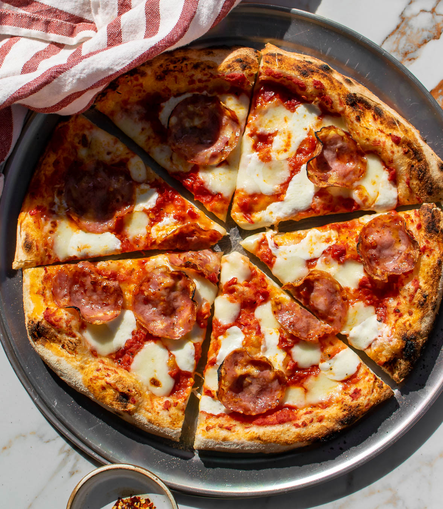
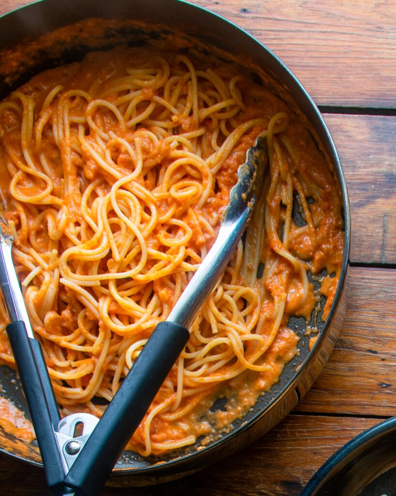
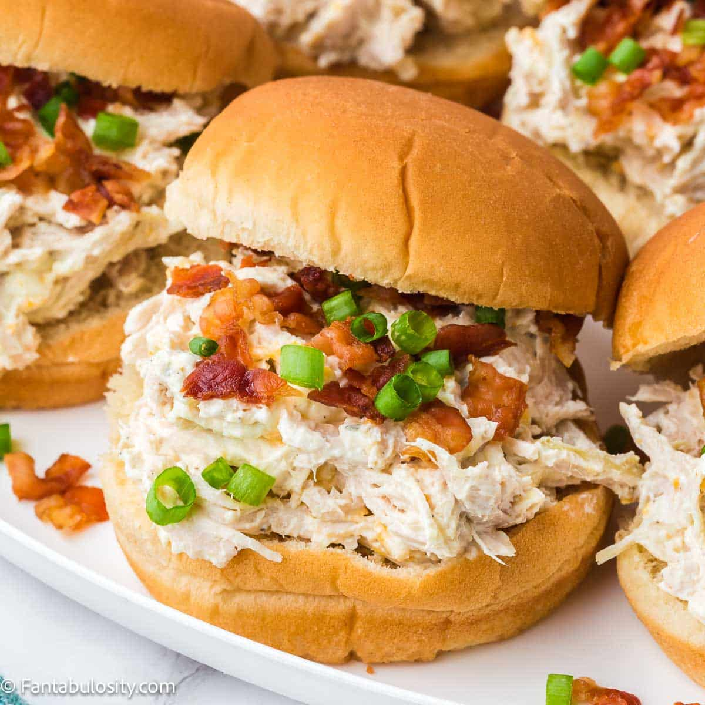

Diavola pizza is a popular Italian pizza featuring a spicy blend of tomato sauce, mozzarella cheese, and hot salami or pepperoni. Originating in Italy, its name translates to "devil's pizza," a nod to the fiery kick provided by the cured meat and occasional additions of chili flakes or spicy oils. It is a savory, zesty favorite for anyone who loves a touch of heat.

The Penne alla Vodka classic blends crushed tomatoes, garlic, onion, and cream into a smooth pink sauce where the vodka helps enhance the tomato flavor and bind the ingredients together. You can easily toss this rich sauce with long strands of spaghetti or traditional tubular pasta, finishing the dish with a generous grating of fresh Parmesan cheese.

A chicken ranch sandwich is a tasty meal filled with juicy chicken, smoky bacon, and cool ranch dressing. You can make this classic favorite using the Ranch Chicken Sandwiches Recipe. Most people add melted cheese, crisp lettuce, and fresh tomatoes on a warm, toasted roll.